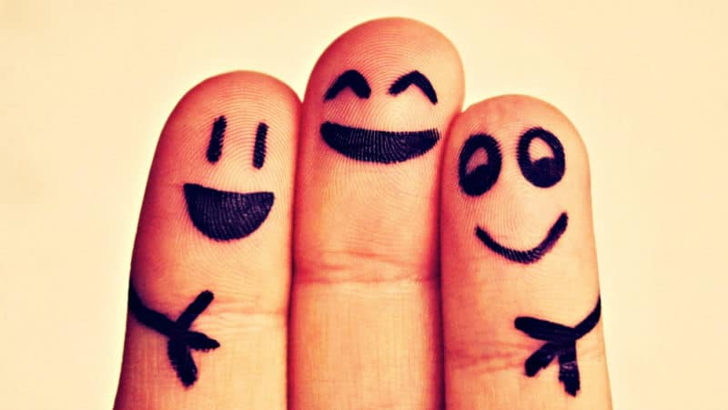

Social Coding was formed in ___ to bring University of Minnesota students together to work on coding projects. Our mission is to create an open environment for those interested in Computer Science and Computer Engineering to expand their knowledge base and to network themselves to others.
Social Coding strives for equal opportunities and treatment of all members, regardless of their ethnicities, beliefs, or orientation. We value our members, thus we provide them with generous opportunities and flexible work loads. Social Coding is an active group. Due to this, we believe in offering a well-known online presence via email correspondents and social media. Our goal is to foster a warm and generous presence among the University. Our name, Social Coding, represents our club's main focuses - being social and coding. Throughout the year, we strive to bring people together outside the classroom to develop projects and learn about new areas of study in computer science. Additional Information
Throughout the year, we focus on different project ideas that our members bring forward such as Chrome extensions, mobile apps, web development, etc. We also strongly encourage networking and preparing for interview through technical interview practice problems. But we also like to organize events such as guest speakers, gaming, outdoor activities and whatever else our club may be interested in. How do your activities benefit the University community?
Our meetings are a way for people interested in computer science to apply what they've learned beyond the classroom and develop new connections that otherwise would not have been made. We are a place for people of all skill levels and backgrounds to come together in a stress-free and casual environment and expand their social circles. We meet every Thursday in Bruinicks 432A at 6:00pm-7:30pm. If you wish to become involved in our group, feel free to reach out to our email (coding@umn.edu) with any questions or concerns.